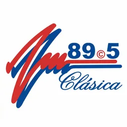

Hub · Género
Radios de merengue
87 emisoras en vivo en VivoRD
El merengue sigue siendo la raíz identitaria del dial dominicano. Emisoras tropicales y generalistas lo declaran en nombre o descripción, ya sea con parrillas clásicas o con mezcla de merengue moderno y otros ritmos. Este hub agrupa fichas donde la palabra merengue aparece en metadatos verificables de VivoRD.
No confundimos tropical genérico con merengue explícito: hace falta mención textual. Así evitamos clasificaciones inventadas. El resultado incluye estaciones de capital, Cibao y regiones con tradición en festivales y carnavales donde el merengue es protagonista.
Cada enlace lleva a reproductor web, frecuencia FM si está documentada y texto editorial único. Streams caídos se excluyen hasta nueva verificación.
Para contexto histórico y recomendaciones ampliadas, lee la guía de merengue y bachata enlazada. El merengue convive hoy con bachata y urbano; explora también esos hubs para comparar estilos.
Las fichas enlazadas muestran frecuencia FM cuando aparece en el nombre o la descripción original; si falta ese dato, la emisora sigue siendo reproducible online aunque no publiquemos cifras inventadas.
En carnaval y Navidad, muchas de estas emisoras refuerzan clásicos de merengue en directo; fuera de temporada el repertorio sigue siendo mayoritariamente nacional con espacio para estrenos.
Emisoras


